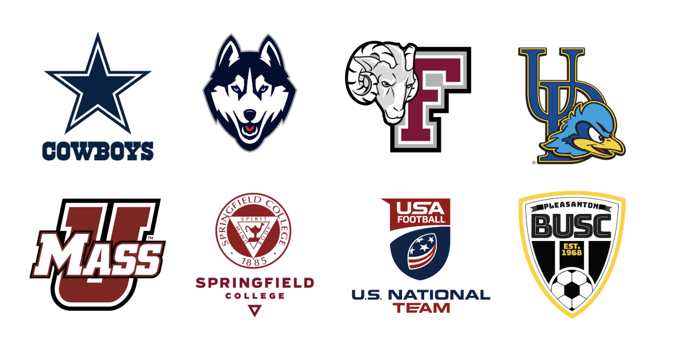

About
Zack Etter founded Holistic Performance Consulting to do the job he couldn’t find anyone else doing: give athletes, coaches, and performers one person who understands the locker room, the science, and the clinical side — because he’s lived all three.

Elite performers across worlds: college and professional athletes, Broadway actors, musicians, executives, and first responders — plus multi-year school partnerships, including a private high school program now in its third year.
Experience with programs & organizations including

Because the athlete who can’t sleep, the quarterback who’s lost confidence, and the kid who’s quietly struggling are often the same person in the same week. A system that only trains performance ignores the person; a system that only treats problems ignores the competitor. HPC trains both — pre-game, in-game, and post-game, on the field and off it.
Book a free consultationZack is an AASP Approved Mentor. Several of his mentees have gone on to earn their CMPC. He runs a small group mentorship cohort for CMPC candidates — 10 Tuesday sessions, 2 hours each, plus individual mentorship so members can complete all 40 mentorship hours. Applications are due December 1, and the next cohort starts Tuesday, January 12. It starts with a conversation about fit — get in touch and mention mentorship.
Get in touch about mentorship